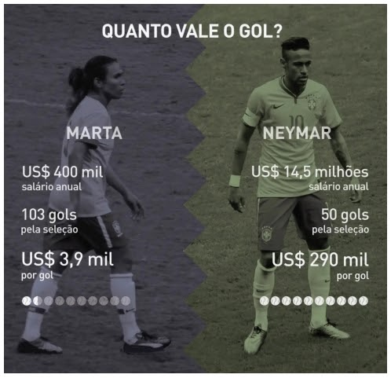

Questões ENEM Matemática
Enem 2017 - Prova Amarela - Questão 136
Os congestionamentos de trânsito constituem um problema que aflige, todos os dias, milhares de motoristas brasileiros. O gráfico ilustra a situação, representando, ao longo de um intervalo definido de tempo, a variação da velocidade de um veículo durante um congestionamento.
Quantos minutos o veículo permaneceu imóvel ao longo do intervalo de tempo total analisada?
A) 4
B) 3
C) 2
D) 1
E) 0
Enem 2020 - Prova Amarela - Questão 155
A Pesquisa Nacional por Amostra de Domicílios (Pnad) é uma pesquisa feita anualmente pelo IBGE, exceto nos anos em que há Censo. Em um ano, foram entrevistados 363 mil jovens para fazer um levantamento sobre suas atividades profissionais e/ou acadêmicas. Os resultados da pesquisa estão indicados no gráfico.
De acordo com as informações dadas, o número de jovens entrevistados que trabalha é:
A) 114.708
B) 164.076
C) 213.444
D) 284.592
E) 291.582
Enem 2018 - Prova Cinza - Questão 137
Um artesão possui potes cilíndricos de tinta cujas medidas externas são 4 cm de diâmetro e 6 cm de altura. Ele pretende adquirir caixas organizadoras para armazenar seus potes de tinta, empilhados verticalmente com tampas voltadas para cima, de forma que as caixas possam ser fechadas.
No mercado, existem cinco opções de caixas organizadoras, com tampa, em formato de paralelepípedo reto retângulo, vendidas pelo mesmo preço, possuindo as seguintes dimensões internas:
Qual desses modelos o artesão deve adquirir para conseguir armazenar o maior número de potes por caixa?
A) I
B) II
C) III
D) IV
E) V
Enem 2018 - Prova Cinza - Questão 138
A prefeitura de um pequeno município do interior decide colocar postes para iluminação ao longo de uma estrada retilínea, que inicia em uma praça central e termina numa fazenda na zona rural. Como a praça já possui iluminação, o primeiro poste será colocado a 80 metros da praça, o segundo, a 100 metros, o terceiro, a 120 metros, e assim sucessivamente, mantendo-se sempre uma distância de vinte metros entre os postes, até que o último poste seja colocado a uma distância de 1 380 metros da praça.
Se a prefeitura pode pagar, no máximo, R$ 8 000,00 por poste colocado, o maior valor que poderá gastar com a colocação desses postes é
A) R$ 512 00,00
B) R$ 520 00,00
C) R$ 528 00,00
D) R$ 552 00,00
E) R$ 584 00,00
Enem 2019 - Prova Rosa - Questão 144
Uma pessoa, que perdeu um objeto pessoal quando visitou uma cidade, pretende divulgar nos meios de comunicação informações a respeito da perda desse objeto e de seu contato para eventual devolução. No entanto, ela lembra que, de acordo com o Art. 1 234 do Código Civil, poderá ter que pagar pelas despesas do transporte desse objeto até sua cidade e poderá ter que recompensar a pessoa que lhe restituir o objeto em, pelo menos, 5% do valor do objeto.
Ela sabe que o custo com transporte será de um quinto do valor atual do objeto e, como ela tem muito interesse em reavê-lo, pretende ofertar o maior percentual possível de recompensa, desde que o gasto total com as despesas não ultrapasse o valor atual do objeto.
Nessas condições, o percentual sobre o valor do objeto dado como recompensa, que ela deverá ofertar é igual a
A) 20%
B) 25%
C) 40%
D) 60%
E) 80%
Enem 2020 - Prova Rosa - Questão 148
O gerente de uma loja de cosméticos colocou à venda cinco diferentes tipos de perfume, tendo em estoque na loja as mesmas quantidades de cada um deles. O setor de controle de estoque encaminhou ao gerente registros gráficos descrevendo os preços unitários de cada perfume, em real, e a quantidade vendida de cada um deles, em percentual, ocorrida no mês de novembro.
Dados a chegada do final de ano e o aumento das vendas, a gerência pretende aumentar a quantidade estocada do perfume do tipo que gerou a maior arrecadação em espécie, em real, no mês de novembro.
Nessas condições, qual o tipo de perfume que deverá ter maior reposição no estoque?
A) I
B) II
C) III
D) IV
E) V
Enem 2017 - Prova Amarela - Questão 142
Raios de luz solar estão atingindo a superfície de um lago formando um ângulo x com a sua superfície, conforme indica a figura.
Em determinadas condições, pode-se supor que a intensidade luminosa desses ralos, na superfície do lago, seja dada aproximadamente por I(x)=k.sen(x)
sendo k uma constante, e supondo-se que x está entre 0° e 90°.
Quando x = 30%, a intensidade luminosa se reduz a qual percentual de seu valor máximo?
A) 33%
B) 50%
C) 57%
D) 70%
E) 86%
Enem 2018 - Prova Azul - Questão 143
Os tipos de prata normalmente vendidos são 975, 950 e 925. Essa classificação é feita de acordo com a sua pureza. Por exemplo, a prata 975 é a substância constituída de 975 partes de prata pura e 25 partes de cobre em 1000 partes da substância. Já a prata 950 é constituída de 950 partes de prata pura e 50 de cobre em 1000; e a prata 925 é constituída de 925 partes de prata pura e 75 partes de cobre em 1000. Um ourives possui 10 gramas de prata 925 e deseja obter 40 gramas de prata 950 para produção de uma joia.
Nessas condições, quantos gramas de prata e de cobre, respectivamente, devem ser fundidos com os 10 gramas de prata 925?
A) 29,25 e 0,75
B) 28,75 e 1,25
C) 28,50 e 1,50
D) 27,75 e 2,25
E) 25,00 e 5,00
Enem 2018 - Prova Azul - Questão 136
A Transferência Eletrônica Disponível (TED) é uma transação financeira de valores entre diferentes bancos. Um economista decide analisar os valores enviados por meio de TEDs entre cinco bancos (1,2, 3, 4 e 5) durante um mês. Para isso, ele dispõe esses valores em uma matriz A = [aij], em que 1 ≤ i ≤ 5 e 1 ≤ j ≤ 5, e o elemento aij corresponde ao total proveniente das operações feitas via TED, em milhão de real, transferidos do banco i para o banco j durante o mês. Observe que os elementos aij = 0, uma vez que TED é uma transferência entre bancos distintos. Esta é a matriz obtida para essa análise:
Com base nessas informações, o banco que transferiu a maior quantia via TED é o banco
A) 1
B) 2
C) 3
D) 4
E) 5
Enem 2019 - Prova Azul PPL- Questão 152
O quadro apresenta a relação dos jogadores que fizeram parte da seleção brasileira de voleibol masculino nas Olimpíadas de 2012, em Londres, e suas respectivas alturas, em metro.
A mediana das alturas, em metro, desses jogadores é:
A) 1,90
B) 1,91
C) 1,96
D) 1,97
E) 1,98
Questões ENEM Português
Enem 2018 - Prova Azul - Questão 07
A utilização de determinadas variedades linguísticas em campanhas educativas tem a função de atingir o público-alvo de forma mais direta e eficaz. No caso desse texto, identifica-se essa estratégia pelo(a)
A) discurso formal da língua portuguesa.
B) registro padrão próprio da língua escrita.
C) seleção lexical restrita à esfera da medicina.
D) fidelidade ao jargão da linguagem publicitária.
E) uso de marcas linguísticas típicas da oralidade.
Enem 2017 - Prova Azul - Questão 28
Campanhas publicitárias podem evidenciar problemas sociais. o cartaz tem como finalidade
A) alertar os homens agressores sobre as consequências de seus atos.
B) conscientizar a população sobre a necessidade de denunciar a violência doméstica.
C) instruir as mulheres sobre o que fazer em casos de agressão.
D) despertar nas crianças a capacidade de reconhecer atos de violência doméstica.
E) exigir das autoridades ações preventivas contra a violência doméstica.
Enem 2017 - Prova Azul - Questão 17
Textos e hipertextos: procurando o equilíbrio
Há um medo por parte dos pais e de alguns professores de as crianças desaprenderem quando navegam, medo de elas viciarem, de obterem informação não confiável, de elas se isolarem do mundo real como se o computador fosse um agente do mal, um vilão. Esse medo é reforçado pela mídia, que costuma apresentar o computador como um agente negativo na aprendizagem e na socialização dos usuários Nós sabemos que ninguém corre o risco de desaprender quando navega, seja em ambientes digitais ou em materiais impressos, mas é preciso ver o que se está aprendendo e algumas vezes interferir nesse processo a fim de otimizar ou orientar a aprendizagem,mostrando aos usuários outros temas, outros caminhos, outras possibilidades diferentes daquelas que eles encontraram sozinhos ou daquelas que eles costumam usar. É preciso, algumas vezes, negociar o uso para que ele não seja exclusivo, uma vez que há outros meios de comunicação, outros meios de informação e outras alternativas de lazer. É uma questão de equilibrar e não de culpar.
A autora incentiva o uso da internet pelos estudantes, ponderando sobre a necessidade de orientação a esse uso, pois essa tecnologia
A) está repleta de informação confiável que constituem fonte única para a aprendizagem dos alunos.
B) exige dos pais e professores que proíbam seu uso abusivo para evitar que se torne um vício.
C) tende a se tornar um agente negativo na aprendizagem e na socialização de crianças e jovens.
D) possibilita maior ampliação do conhecimento do mundo quando a aprendizagem é direcionada.
E) leva ao isolamento do mundo real e ao uso exclusivo do computador se a navegação for desmedida.
Enem 2017 - Prova Azul - Segunda Aplicação - Questão 39
Importantes recursos de reflexão e crítica próprios do gênero textual, esses quadrinhos possibilitam pensar sobre o papel da tecnologia nas sociedades contemporâneas, pois
A) indicam a solidão existencial dos usuários das redes sociais virtuais.
B) criticam a superficialidade das relações humanas mantidas pela internet.
C) retratam a dificuldade de adaptação de pessoas mais velhas às relações virtuais.
D) ironizam o crescimento da conexão virtual oposto à falta de vínculos reais entre as pessoas.
E) denunciam o enfraquecimento das relações humanas nos mundos virtual e real contemporâneos.
Enem 2019 - Prova Azul - Primeira Aplicação - Questão 24
Blues da piedade
Vamos pedir piedade
Senhor, piedade
Pra essa gente careta e covarde
Vamos pedir piedade
Senhor, piedade
Lhes dê grandeza e um pouco de coragem
Todo gênero apresenta elementos constitutivos que condicionam seu uso em sociedade. A letra de canção identifica-se com o gênero ladainha, essencialmente, pela utilização da sequência textual
A) expositiva, por discorrer sobre um dado tema.
B) narrativa, por apresentar uma cadeia de ações.
C) injuntiva, por chamar o interlocutor à participação.
D) descritiva, por enumerar características de um personagem.
E) argumentativa, por incitar o leitor a uma tomada de atitude.
Enem 2019 - Prova Azul - Questão 45
Irerê, meu passarinho do sertão do Cariri,
Irerê, meu companheiro,
Cadê viola? Cadê meu bem? Cadê Maria?
Ai triste sorte a do violeiro cantadô!
Ah! Sem a viola em que cantava o seu amô,
Ah! Seu assobio é tua flauta de irerê:
Que tua flauta do sertão quando assobia,
Ah! A gente sofre sem querê!
Ah! Teu canto chega lá no fundo do sertão,
Ah! Como uma brisa amolecendo o coração,
Ah! Ah!
Irerê, solta teu canto!
Canta mais! Canta mais!
Prá alembrá o Cariri!
VILLA-LOBOS, H. Bachianas Brasileiras n. 5 para soprano e oito violoncelos (1938-1945).
Disponível em: http://euterpe.blog.br
Nesses verbos, há uma exaltação ao sertão do Cariri em uma ambientação linguisticamente apoiada no(a)
A) uso recorrente de pronomes.
B) variedade popular da língua portuguesa.
C) referência ao conjunto da fauna nordestina.
D) exploração de instrumentos musicais eruditos.
E) predomínio de regionalismos lexicais nordestinos.
Enem 2019 - Prova Azul - Primeira Aplicação - Questão 44
Toca a sirene na fábrica,
e o apito como um chicote
bate na manhã nascente
e bate na tua cama
no sono da madrugada.
Ternuras da áspera lona
pelo corpo adolescente.
É o trabalho que te chama.
Às pressas tomas o banho,
tomas teu café com pão,
tomas teu lugar no bote
no cais do Capibaribe.
Deixas chorando na esteira
teu filho de mãe solteira.
Levas ao lado a marmita,
contendo a mesma ração
do meio de todo o dia,
a carne-seca e o feijão.
De tudo quanto ele pede
dás só bom-dia ao patrão,
e recomeças a luta
na engrenagem da fiação
MOTA, M. Canto ao meio.
Rio de Janeiro: Civilização Brasileira, 1964.
Nesse texto, a mobilização do uso padrão das formas verbais e pronominais.
A) ajuda a localizar o enredo num ambiente estático.
B) auxilia na caracterização física do personagem principal.
C) acrescenta informações modificadoras às ações dos personagens.
D) alterna os tempos da narrativa, fazendo progredir as ideias do texto.
E) está a serviço do projeto poético, auxiliando na distinção dos referentes.
Enem 2020 - Prova Azul - Primeira Aplicação - Questão 15
O suor para estar em competições nacionais e internacionais de alto nível é o mesmo para homens e mulheres, mas não raramente as remunerações são menores para elas. Se no tênis, um dos esportes mais equânimes em termos de gênero, todos os principais torneios oferecem prêmios idênticos nas disputas femininas e masculinas, no futebol a desigualdade atinge seu ápice. Neymar e Marta são dois expoentes dessa paixão nacional. Ela já foi eleita cinco vezes a melhor jogadora do mundo pela Fifa. Ele conquistou o terceiro lugar na última votação para melhor do mundo. Mas é na conta bancária que a diferença entre os dois se sobressai.

O esporte é uma manifestação cultural na qual se estabelecem relações sociais. Considerando o texto, o futebol é uma modalidade que
A) apresenta proximidades com o tênis, no que tange às relações de gênero entre homens e mulheres.
B) se caracteriza por uma identidade masculina no Brasil, conferindo maior remuneração aos jogadores.
C) traz remunerações, aos jogadores e jogadoras, proporcionais aos seus esforços no treinamento esportivo.
D) resulta em melhor eficiência para as mulheres e, consequentemente, em remuneração mais alta às jogadoras.
E) possui jogadores e jogadoras com a mesma visibilidade, apesar de haver expoentes femininas de destaque, como Marta.
Enem 2020 - Prova Azul - Questão 10
O ouro do século 21
Cério, gadolínio, lutécio, promécio e érbio; sumário, térbio e disprósio; hólmio, túlio e itérbio. Essa lista de nomes esquisitos e pouco conhecidos pode parecer a escalação de um time de futebol, que ainda teria no banco de reservas lantânio, neodímio, praseodímio, európio, escândio e ítrio. Mas esses 17 metais, chamados de terras-raras, fazem parte da vida de quase todos os humanos do planeta. Chamados por muitos de “ouro do século 21”, “elementos do futuro” ou “vitaminas da indústria”, eles estão nos materiais usados na fabricação de lâmpadas, telas de computadores, tablets e celulares, motores de carros elétricos, baterias e até turbinas eólicas. Apesar de tantas aplicações, o Brasil, dono da segunda maior reserva do mundo desses metais, parou de extraí-los e usá-los em 2002. Agora, volta a pensar em retomar sua exploração.
SILVEIRA, E. Disponível em: www.revistaplaneta.com.br.
As aspas sinalizam expressões metafóricas empregadas intencionalmente pelo autor do texto para
A) imprimir um tom irônico à reportagem.
B) incorporar citações de especialistas à reportagem.
C) atribuir maior valor aos metais, objeto da reportagem.
D) esclarecer termos científicos empregados na reportagem.
E) marcar a apropriação de termos de outra ciência pela reportagem.
Enem 2020 - Prova Azul - Questão 40
— O senhor pensa que eu tenho alguma fábrica de dinheiro? (O diretor diz essas coisas a ele, mas olha para todos como quem quer dar uma explicação a todos. Todas as caras sorriem.) Quando seu filho esteve doente, eu o ajudei como pude. Não me peça mais nada. Não me encarregue de pagar as suas contas: já tenho as minhas, e é o que me basta... (Risos.)
O diretor tem o rosto escanhoado, a camisa limpa. A palavra possui um tom educado, de pessoa que convive com gente inteligente, causeuse. O rosto do Dr. Rist resplandece, vermelho e glabro. Um que outro tem os olhos no chão, a atitude discreta.
Naziazeno espera que ele lhe dê as costas, vá reatar a palestra interrompida, aquelas observações sobre a questão social, comunismo e integralismo.
MACHADO, D. Os ratos. São Paulo: Círculo do Livro, s/d
A ficção modernista explorou tipos humanos em situação de conflito social. No fragmento do romancista gaúcho, esse conflito revela a
A) sujeição moral amplificada pela pobreza.
B) crise econômica em expansão nas cidades.
C) falta de diálogo entre patrões e empregados.
D) perspicácia marcada pela formação intelectual.
E) tensão política gerada pelas ideologias vigentes.